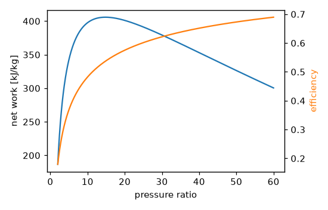

Thermodynamics exercises#
Three problems built on the thermodynamics gallery. Try each one before opening its solution. The solutions run when the documentation is built, and the test suite checks every number they print. The tutorial A power plant from cycle to cooling tower follows a steam cycle through its condenser.
1. Why diesels are more efficient#
At the same compression ratio the ideal Otto cycle is more efficient than the ideal Diesel cycle. Show it for a compression ratio of 18 and a cutoff ratio of 2. Yet diesel engines are the more efficient in practice. Explain why by comparing a diesel at 18 with a petrol engine limited by knock to a compression ratio of 10.
Builds on: Examples (the Otto and Diesel comparison).
Solution
import numpy as np
from engineeringkit.thermodynamics import diesel_efficiency, otto_efficiency
print(f"r = 18: Otto {otto_efficiency(18):.3f}, Diesel (cutoff 2) {diesel_efficiency(18, 2):.3f}")
print(f"petrol engine at r = 10: Otto {otto_efficiency(10):.3f}")
# r = 18: Otto 0.685, Diesel (cutoff 2) 0.632
# petrol engine at r = 10: Otto 0.602
assert otto_efficiency(18) > diesel_efficiency(18, 2) > otto_efficiency(10)
assert np.isclose(otto_efficiency(10), 1 - 10 ** (1 - 1.4))
A diesel compresses air alone, so it cannot knock, and its higher compression ratio more than makes up for adding heat at constant pressure.
2. The best pressure ratio of a gas turbine#
A gas turbine draws air at 300 K, and its turbine inlet is limited to 1400 K. In the ideal Brayton cycle (cold air, \(\gamma = 1.4\), \(c_p = 1005\) J/(kg K)) the efficiency rises with pressure ratio, but the net work per kilogram of air has a maximum. Find the pressure ratio of maximum work, and check it against \(r_p = (T_3/T_1)^{\gamma/(2(\gamma-1))}\).
Builds on: Examples.
Solution
import matplotlib.pyplot as plt
import numpy as np
from engineeringkit.thermodynamics import brayton_efficiency, isentropic_temperature_ratio
T1, T3, cp, gamma = 300.0, 1400.0, 1005.0, 1.4
rp = np.linspace(2, 60, 5801)
tau = isentropic_temperature_ratio(rp, gamma) # T2/T1 = T3/T4
work = cp * (T3 - T3 / tau) - cp * (T1 * tau - T1)
best = rp[np.argmax(work)]
print(f"maximum net work {work.max() / 1e3:.1f} kJ/kg at r_p = {best:.1f} (formula {(T3 / T1) ** (gamma / (2 * (gamma - 1))):.2f})")
efficiency = np.array([brayton_efficiency(r) for r in rp])
print(f"efficiency there {brayton_efficiency(best):.3f}")
# maximum net work 405.9 kJ/kg at r_p = 14.8 (formula 14.82)
# efficiency there 0.537
assert np.allclose(efficiency, 1 - 1 / tau)
assert abs(best - (T3 / T1) ** (gamma / (2 * (gamma - 1)))) < 0.02
fig, ax = plt.subplots(figsize=(5, 3.2))
ax.plot(rp, work / 1e3)
ax.set(xlabel="pressure ratio", ylabel="net work [kJ/kg]")
ax2 = ax.twinx()
ax2.plot(rp, efficiency, "C1")
ax2.set_ylabel("efficiency", color="C1")
fig.tight_layout()

At maximum work the compressor outlet and turbine outlet temperatures are equal, \(T_2 = T_4 = \sqrt{T_1 T_3}\). Aircraft engines, where weight matters, run near this ratio; combined-cycle plants accept less work per kilogram for more efficiency, or recover the exhaust heat.
3. A heat pump against the second law#
A house needs 10 kW of heat at 20 °C when it is 0 °C outside. A heat pump achieves 45% of the Carnot COP. Find its COP, its electrical input, and the minimum work the second law allows, from the exergy of the delivered heat. Compare with an electric heater.
Builds on: Examples.
Solution
import numpy as np
from engineeringkit.thermodynamics import carnot_cop_heat_pump, exergy_heat, heat_pump_cop
Q, T_house, T_out = 10e3, 293.15, 273.15
cop = 0.45 * carnot_cop_heat_pump(T_house, T_out)
W = Q / cop
W_min = exergy_heat(Q, T_house, T_out)
print(f"Carnot COP {carnot_cop_heat_pump(T_house, T_out):.2f}, real COP {cop:.2f}, electrical input {W / 1e3:.2f} kW")
print(f"minimum work {W_min:.0f} W: second-law efficiency {W_min / W:.0%} (electric heater {W_min / Q:.1%})")
# Carnot COP 14.66, real COP 6.60, electrical input 1.52 kW
# minimum work 682 W: second-law efficiency 45% (electric heater 6.8%)
assert np.isclose(heat_pump_cop(Q, W), cop) and np.isclose(W_min, Q / carnot_cop_heat_pump(T_house, T_out))
The heat pump’s second-law efficiency equals its fraction of Carnot, 45%. The electric heater turns 10 kW of work into heat worth only 682 W of work: by the second law it is less than 7% efficient, though by the first law it is perfect.